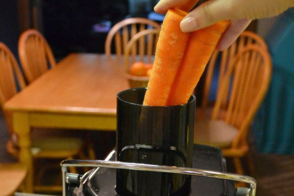

Nước ép cà rốt là một trong những món quen thuộc trong danh sách các loại nước ép tại các cửa hàng thức uống. Cách làm nước ép này hết sức đơn giản mà bất cứ lúc nào bạn cũng có thể áp dụng. Không chỉ cung cấp công thức, hướng dẫn chi tiết từng bước, bạn còn được biết thêm các bí quyết pha chế và sử dụng nước ép đúng cách.
Nguyên liệu
500gr cà rốt
10ml nước cốt chanh
10ml siro đường
Đá viên, lá mint
Cách làm nước ép cà rốt
Cà rốt là thực phẩm mang lại nhiều dinh dưỡng cho cơ thể con người. Nước ép cà rốt cũng luôn là lựa chọn của nhiều người nhờ vào hương vị thơm ngon và bổ dưỡng. Thế nhưng, ép cà rốt như thế nào để vừa ngon vừa không bị mất chất là điều bạn nên lưu tâm khi sử dụng loại nước ép này.
Với các bước hướng dẫn dưới đây, bạn sẽ có ngay những lý nước ép cà rốt, ngon, hấp dẫn và đặc biệt là bổ dưỡng. Hãy chuẩn bị nguyên liệu, công dụng cụ và cùng chúng tôi thực hiện ngay nhé!
Sơ chế cà rốt
Bạn chọn mua những củ cà rốt thon dài, đều màu và không bị nốt sần hoặc bị dập úng.
Sau khi mua về, bạn rửa sạch cà rốt bằng cách dùng một chiếc bàn chảy sạch để chà rửa phần vỏ ngoài vì khi ép sẽ ép luôn cả vỏ. Tuy nhiên, nếu không tìm mua được cà rốt trồng hữu cơ, bạn nên gọt bỏ vỏ để đảm bảo an toàn
Cà rốt sau khi rửa xong, bạn cắt bỏ phần cuốn sau đó cắt dọc theo thân củ.
Ép nước cà rốt
Trước khi cho cà rốt vào ép, bạn nên chú ý vệ sinh lại máy ép 1 lần bằng cách khởi động máy sau đó rót nước lọc vào. Đợi phần nước lọc chảy ra hết thì bạn tiến hành ép.
Khởi động máy, cho cà rốt vào và ép lấy nước.
Pha chế nước ép và trang trí
Cách pha nước ép cà rốt đơn giản là kết hợp với nước cốt chanh, 1 ít nước đường. Bạn rót nước ép vừa pha vào ly, cho thêm nước cốt chanh, siro đường vào khuấy đều cho các nguyên liệu hòa tan.
Thêm đá viên vào, trang trí 1 lát cà rốt hoặc một miếng cà rốt tỉa hoa trên miệng ly.